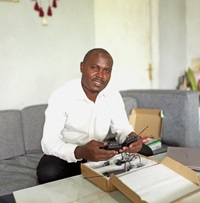

Jean Ntampaka | WDD 130
Hello World! My name is Jean Ntampaka, I am from Kigali, the Capital City of Rwanda. I enjoy computers and the nature. I would like to be a Software Engineer by training and a farmer by passion.
Hello World! My name is Jean Ntampaka, I am from Kigali, the Capital City of Rwanda. I enjoy computers and the nature. I would like to be a Software Engineer by training and a farmer by passion.